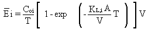

2.10 SPILL SITES
EPA's (1988, 1990) model for computing volatilization rates from "new spill
sites" is implemented in the user-interface (AG-VCASE = 3) of MEPAS 3.n
versions. Spills occur when wastes are accidently released from a containment
system. When the spilled material is a liquid waste containing volatile
organics, volatilization will occur until the organics are depleted; the
volatilization rate may be time-dependent. If the spill occurred on soil,
the liquid material will soak into the bulk of the soil while the volatilization
process progresses. The duration and the extent of the soaking process
will depend upon the characteristics of the soil and the waste. The model
used for estimating emission rates from spill sites in MEPAS assumes that
a finite but sufficient amount of the original liquid spill remains on
the surface of the elements of the soil or pavement. Most emissions are
attributable to the liquid above the surface of the spilled object. The
equations for estimating emission rates are the same as the equations used
for a surface impoundment (Equations 29 and 30). Thus, the emission rate
averaged over time, T, from a spill site is

(34)
where
E-i = average emission rate over time T (g/s)
KL,i = overall liquid-phase mass-transfer coefficient (cm/s)
Coi = initial concentration of constituent i in the spilled liquid (g/cm3)
V = volume of liquid spilled (cm3)
A = spill area (cm2)
T = emission time over which emission rates are averaged (s).
The overall mass-transfer coefficient to be used in Equation 34 can be
obtained from Equations 31, 32, and 33 as described previously.
If a spill is left for some time without cleanup, the spilled volatile
materials may no longer be pooled on the surface and the spill model will
no longer be appropriate. The spill materials that have not been lost by
volatilization (or other processes), will generally be soaked into the
underlying surface. The resultant situation will often more closely resemble
one of the models for contaminated soil.